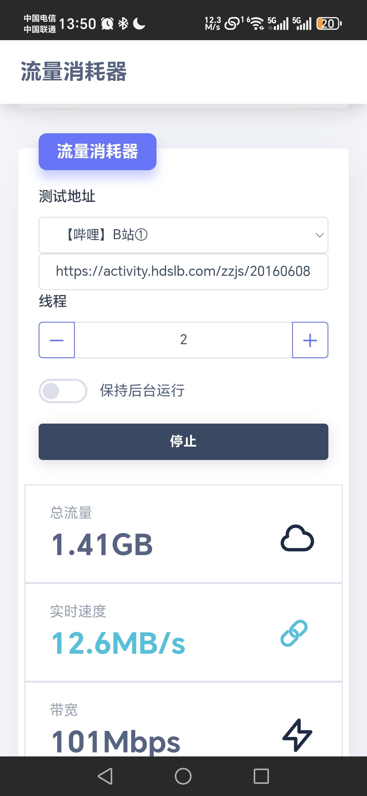
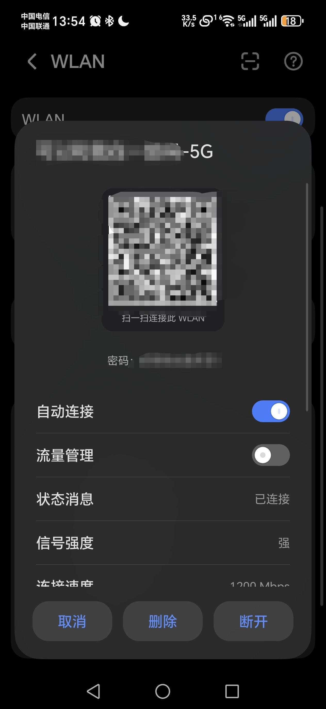
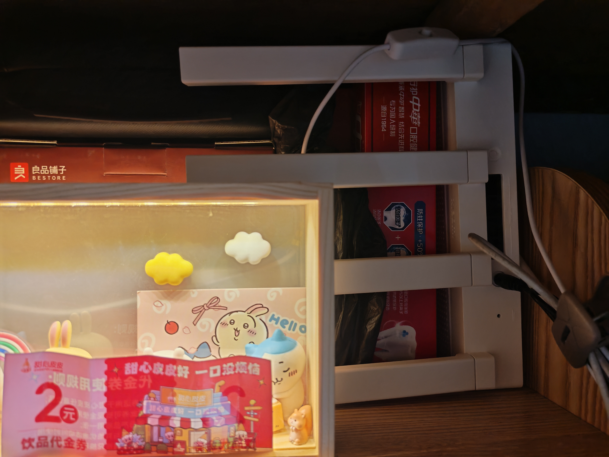
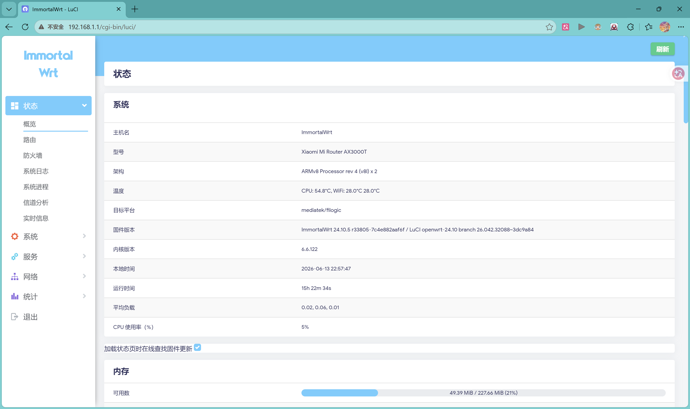
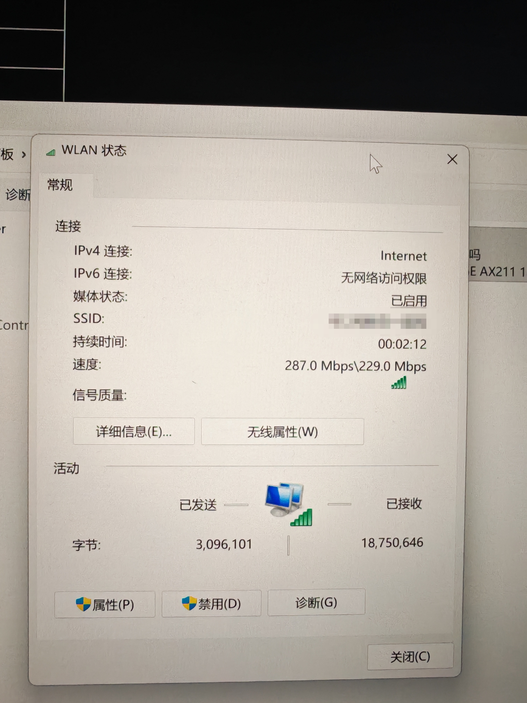
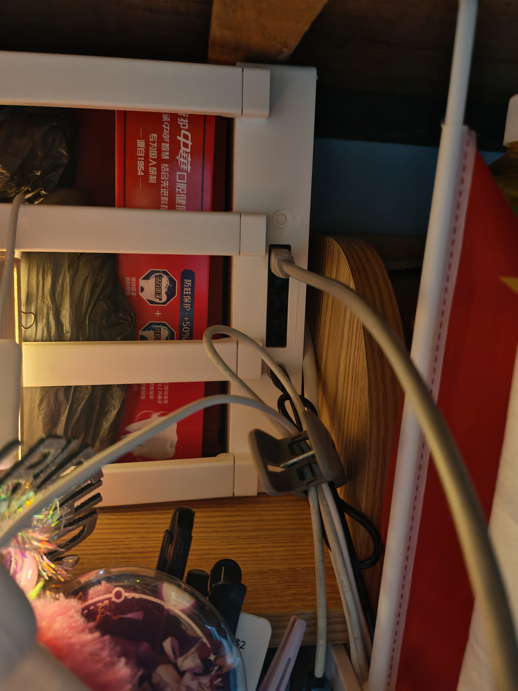

—— 一台路由器，解决宿舍上网所有烦恼 ——

我花了一周，从零折腾了一台小米 AX3000T 路由器，刷了开源固件，让它变成宿舍的"专属基站"。
WiFi6 协议，双频 2.4G + 5G，四根天线信号覆盖整个宿舍。

实测下载速度 12.8MB/s，换算成带宽就是 102Mbps，跑满了校园网的百兆上限。
这是什么概念？

连上WiFi就能用，不用打开浏览器，不用手动登录。
掉线了自动重连，你甚至感觉不到中间断过。

折腾过程中踩了不少坑，每一个都是实打实解决的：
| 问题 | 具体表现 | 状态 |
|---|---|---|
| 设备重连会断网 | 室友手机重连WiFi，全宿舍断网 | ✅ 已修复 |
| 断网恢复慢 | 恢复要等20秒 | ✅ 优化到1秒 |
| 校园网站打不开 | 教务系统、图书馆加载失败 | ✅ 已修复 |
| 一人下载全宿舍卡 | 室友下东西，我打游戏卡死 | ✅ 智能分配 |
| 广告太多 | 网页弹窗、视频广告烦人 | ✅ 自动屏蔽 |

这些问题花了好几天才全部搞定，但现在都稳定解决了。你踩过的坑，别人不用再踩。

9 个常用网站 × 30 轮连续访问测试，全部通过，成功率 100%。
测的都是真实场景：百度、B站、教务系统、图书馆……不是实验室数据，是真实能用。

路由器背面有 LAN 口，台式机、游戏主机、网络打印机都可以直接插网线。
有线连接比 WiFi 更稳定，延迟更低，打游戏的同学可以优先考虑。
WiFi6 协议，连接速率 1200Mbps，实际跑满校园网百兆带宽。
比普通 WiFi5 路由器快 2.4 倍，信号更强，穿墙更好，多人同时连接不卡顿。
四根天线，5GHz + 2.4GHz 双频并发，宿舍每个角落都有信号。

路由器放在宿舍桌上，四根天线立起来，信号覆盖整个宿舍。
不占地方，不吵不闹，安安静静干活。
这台路由器有两个频段，各有分工：
| 频段 | 用途 | 优势 |
|---|---|---|
| 5GHz | 手机、电脑上网主力 | 速度快，跑满百兆，延迟低 |
| 2.4GHz | 智能家居设备 | 穿墙好，覆盖广，兼容性强 |
智能灯、智能音箱、智能插座、摄像头——全连 2.4G，不影响 5G 的网速。
宿舍秒变智能宿舍。
| 功能 | 说明 |
|---|---|
| 🔌 插电就能用 | 不需要操心任何东西 |
| 🚀 连上WiFi就能用 | 不用手动登录，掉线自动重连 |
| ⚡ 百兆跑满 | 智能分配带宽 |
| 🎮 一人下载不影响其他人 | 各用各的 |
| 🔄 断网1秒自动恢复 | 你甚至感觉不到 |
| 🚫 广告屏蔽 | 全设备自动生效 |
| 📚 教务系统、图书馆正常访问 | 校园内部网站无障碍 |
| 🔗 台式机可以插网线 | 游戏主机也能用 |
| 🏠 2.4G 支持智能家居 | 智能灯、音箱、插座 |
| 📊 流量监控 | 每台设备用了多少一目了然 |
| 📈 性能监控 | CPU、内存、延迟长期记录 |
| 对比项 | 自己搞 | 找我装 |
|---|---|---|
| 技术门槛 | 需要 Linux、网络基础 | 不需要任何技术 |
| 时间成本 | 花一周时间 | 半天搞定 |
| 踩坑数量 | 9+ 个坑，每个都要排查 | 坑都踩过了，直接跳过 |
| 成功率 | 可能搞不定 | 保证能用 |
| 售后支持 | 出问题自己查 | 有问题随时联系 |
路由器 ¥150（小米 AX3000T，WiFi6 双频四天线）
免费帮刷固件 + 配置 + 使用指导
自己从零搞需要折腾一周，找我半天搞定，包售后。
有需要的同学可以私我哦~😘